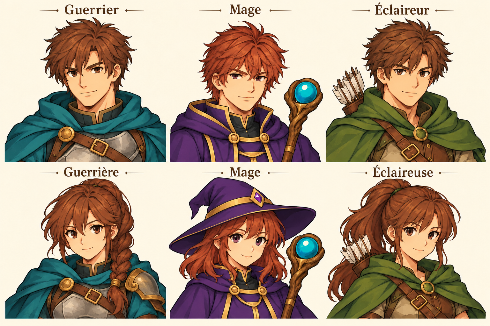
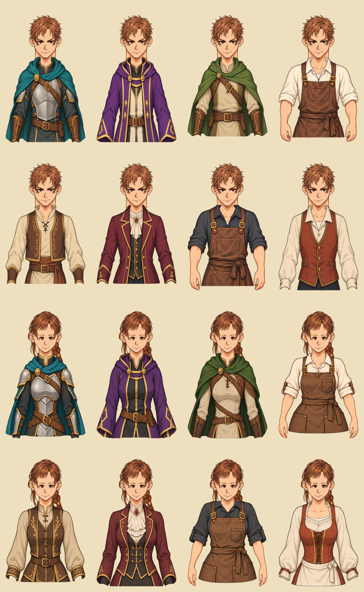
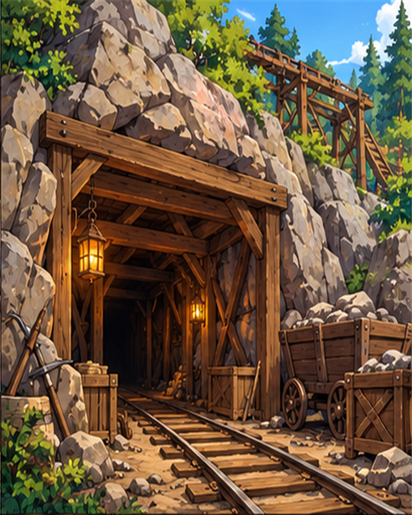

Des héros cohérents avec leurs sprites et des PNJ composés dans deux bibliothèques de proportions distinctes.
Comprendre ce que cela implique
Les portraits fixes des six héros définissent la palette et le traitement anime. Le Mage masculin abandonne le chapeau pointu au profit d’une capuche rabattue, également présente sur son sprite.
Les PNJ génériques utilisent une bibliothèque masculine ou féminine : tête, yeux, nez, bouche, vêtements et accessoires restent dans cette bibliothèque. La coiffure est indépendante de la tête et ne contient ni peau ni oreilles ; les cheveux longs ont des parties avant et arrière assorties. Un descripteur croisé est refusé.
Il s’agit uniquement de présentation : les caractéristiques, déplacements, productions et récompenses restent validés par le serveur. L’atelier de portraits permet d’inspecter plusieurs assemblages sans modifier une partie.
L’atelier permet de comparer quatre coupes sur un même visage dans chaque bibliothèque et de vérifier plusieurs lots de douze personnages masculins et douze personnages féminins. Les calques v1 restent archivés ; cette correction ne change pas les règles du jeu.
Les visages larges sont temporairement désactivés : chaque bibliothèque conserve une seule base de tête active. Les anciens fichiers restent archivés, mais ne sont plus générés ni acceptés dans un assemblage.
Les conversations composées réservent une scène au buste et au décor : au-dessus du texte sur téléphone, à côté du panneau sur écran large. Le titre clair reste lisible sur un bandeau sombre. Un défaut de découpage des cheveux qui ajoutait un fragment sous les yeux est corrigé.
La bibliothèque v3 réduit ensemble tête, traits et cheveux à 72 % de leur taille précédente sur une toile de 512 × 832 pixels. Les seize tenues ont des épaules complètes et des marges latérales ; les tenues à manches retroussées incluent les avant-bras et les mains. Le dessous de corps assure le raccord du cou. Les versions v1 et v2 restent archivées. Aucun effet sur les règles.



Dans cet article
Détails de référence
Texte de référence mis en forme et conservé dans l’historique de cet article. Les paragraphes datés peuvent décrire une évolution ou une étape antérieure.
Disponible depuis le 24 octobre 2026
Les six portraits des héros suivent une direction anime fantasy : contours nets, couleurs lisibles et ombres légères. Ils conservent les costumes des sprites : cape bleu pétrole du Guerrier, violet et or du Mage et cape verte de l'Éclaireur. Le Mage masculin porte désormais les cheveux courts dégagés et une capuche rabattue. Son sprite de marche utilise aussi cette tenue, sans chapeau pointu. La Mage féminine conserve son chapeau. Les anciens fichiers restent archivés.
Les portraits des héros sont des illustrations fixes. La personnalisation de leur visage par le joueur et la composition de leurs animations ne sont pas proposées. Les calques dérivés de cette direction artistique servent aux PNJ génériques.
Bibliothèques de PNJ v3 — correction du 24 octobre 2026
La première bibliothèque v1 combinait des éléments masculins et féminins avec des points d'ancrage communs. Elle est remplacée par deux bibliothèques distinctes, v3/male et v3/female, chacune avec ses proportions de tête, de cou, de traits et de vêtements. Les fichiers v1 et v2 restent conservés pour l'historique.
La toile v3 mesure 512 × 832 pixels. La tête, les traits et les cheveux sont réduits ensemble à 72 % de leur taille v2 pour conserver leurs placements relatifs. Les seize tenues sont redessinées jusqu'aux hanches, avec les deux épaules entières et une marge latérale transparente. Les tenues de travail et de forge comprennent les avant-bras et les mains sous leurs manches retroussées. Ces parties suivent la coupe des manches ; un calque de corps sous les vêtements assure le raccord du cou et du haut du torse. Les bibliothèques masculine et féminine restent séparées.
Chaque bibliothèque utilise une base de tête chauve, quatre coupes de cheveux, deux paires d'yeux avec sourcils, deux nez, deux bouches et huit tenues. Les tenues féminines sont dessinées pour cette silhouette, avec une coupe propre. La barbe existe uniquement dans la bibliothèque masculine ; les cicatrices, boucles d'oreille et pendentifs ont leurs fichiers et placements propres à chaque bibliothèque. L'absence d'accessoire reste possible.
Les variantes de visage larges male-face-1 et female-face-1 sont désactivées depuis le 24 octobre 2026 : leurs proportions avec les bustes et l'écartement apparent des yeux ne conviennent pas encore. Elles ne sont plus sélectionnées, ni acceptées dans un assemblage, ni préchargées. Les fichiers restent conservés pour une éventuelle reprise ; seule la base face-0 de chaque bibliothèque est actuellement utilisée. Les coiffures, traits, vêtements et accessoires gardent leurs identifiants et leur sélection stable. Aucune règle du jeu ne change.
La coupe de cheveux est un calque indépendant : elle ne contient ni peau, ni oreilles, ni yeux et n'est pas fusionnée avec la tête. Le visage reste identique lorsqu'on change de coupe. Pour les coiffures longues féminines, une partie arrière passe derrière la tête et le vêtement, puis une partie avant affiche la frange et les mèches. Les deux parties portent le même indice de coupe et ne peuvent pas être désaccordées. La toile est de 512 × 832 pixels, mais les points d'ancrage sont propres à chaque bibliothèque et à chaque coupe.
Les chefs génériques, les responsables de mine, carrière et chantier forestier, les responsables de fort, les forgerons, les taverniers et les PNJ recrutables en taverne utilisent ces couches. Les PNJ recrutables apparaissent en vignette dans les choix de conversation. Les illustrations narratives définies dans un scénario ou dans l'éditeur restent prioritaires et ne sont pas remplacées.
Identité stable et décor
Un descripteur de présentation sérialisable indique la version, la bibliothèque masculine ou féminine et l'identifiant de chaque pièce, par exemple male-hair-0 ou female-eyes-1. Il est dérivé de l'identifiant permanent du PNJ, sans tirage aléatoire à l'ouverture de la fenêtre. Un chef utilise l'identifiant de son lieu ; un forgeron et un tavernier ont des identités distinctes dans le même lieu. Un spécialiste recrutable conserve ses traits lorsqu'il change de taverne ou après une reprise. La bibliothèque masculine ou féminine suit la base déjà attribuée par la v1 ; un genre explicite peut aussi être fourni au générateur de présentation. Une pièce de l'autre bibliothèque rend le descripteur invalide : elle n'est jamais affichée par substitution ou par redimensionnement automatique. Le catalogue v2 et ses identifiants doivent rester stables ; une nouvelle collection utilisera une nouvelle version sans réordonner les pièces déjà utilisées.
Le décor suit le type de lieu : village, ville/capitale, fort, mine, carrière ou forêt/chantier/camp. Les conversations du forgeron et du tavernier montrent leur atelier ou leur salle. Les PNJ recrutables sont présentés dans la taverne. Les tenues suivent la fonction : travailleur, responsable civil, artisan ou aventurier.
Architecture et vérification
Cadrage des conversations — 24 octobre 2026
Les dialogues composés réservent une scène au-dessus du texte sur téléphone : le personnage est présenté jusqu'à la taille et le décor reste visible autour de lui. Le panneau de dialogue ne recouvre plus le buste ; il garde son propre défilement si le texte ou les choix sont longs. Sur écran large, le panneau est placé à côté de la scène. Le titre clair utilise un bandeau sombre pour rester lisible avec le thème parchemin. Les portraits narratifs spécifiques conservent leur présentation habituelle.
Le découpage de la première rangée des coiffures féminines s'arrête dans l'espace transparent entre les dessins. Cela retire un fragment de la coiffure voisine qui apparaissait sous les yeux. Le contrôle des pixels alpha couvre cette zone pour éviter une régression. Il s'agit uniquement de présentation, sans effet sur les règles du moteur ni les mesures GPS.
app/js/core/portrait-catalog.js définit les références et les descripteurs sans DOM. Les services existants de conversation et de taverne exposent les apparences. app/js/ui/portrait-view.js valide le descripteur puis affiche les couches ; il n'accepte aucun chemin d'image arbitraire dans ce descripteur. Les portraits spécifiques continuent d'utiliser leur référence habituelle. Le navigateur ne reçoit ici aucun pouvoir de calculer des coûts, récompenses, déplacements ou combats : toutes les validations du jeu restent sur le serveur, en GPS comme sur carte fictive. Cette évolution ne change aucune règle du jeu.
L'atelier app/portrait-lab.html présente les héros, douze assemblages masculins, douze assemblages féminins par lot et quatre coupes sur un même visage pour chacune des deux bibliothèques. Le sélecteur de calques permet de les examiner séparément. Une galerie supplémentaire montre les seize tenues sur deux visages fixes pour contrôler les proportions, les épaules et les avant-bras. Il ne modifie aucune partie. Les scripts prepare-portrait-assets.ps1, prepare-gendered-portrait-assets.ps1 et prepare-mage-sprite.ps1 découpent les atlas générés, alignent les pièces et mesurent les rectangles alpha du sprite. Les sources de travail sont conservées dans app/assets/portraits/modular/sources/. La génération artistique utilise l'outil intégré imagegen ; le découpage et les aperçus assemblés sont déterministes. Les anciens assets ne sont pas supprimés. Les prompts de cette correction sont conservés dans sources/prompts-v2.json. Les sources et prompts v3 sont dans sources/v3/. Le script prepare-portrait-bodies-v3.ps1 prépare les calques selon v3/layout.json ; preview-portrait-bodies-v3.ps1 assemble les seize tenues pour vérification.